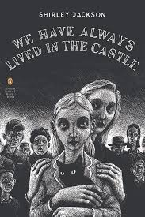

The Blackwood family has been ostracized by their small village following a tragic incident six years prior, where most of the family died from arsenic poisoning during a
dinner. Constance was accused of the murders but was acquitted, leaving the sisters and Uncle Julian to live in seclusion. Merricat, who frequently ventures into town for
groceries, faces hostility from the villagers, who harbor resentment and suspicion towards the Blackwoods.
Merricat is portrayed as a quirky and unreliable narrator, with a penchant for magical thinking and a deep protective instinct for her sister. She engages in rituals and
believes she can ward off danger through her actions. The sisters' isolated life is disrupted when their cousin Charles arrives, bringing with him a desire to reclaim the
family estate and disrupt their routine.
As Charles attempts to integrate himself into their lives, Merricat feels threatened and resorts to increasingly desperate measures to protect her sister and their way of
life. The tension escalates, culminating in a catastrophic fire that destroys their home and forces the sisters to confront the villagers' wrath. In the aftermath, they
retreat further into isolation, finding a twisted sense of happiness in their new reality.
Themes
Isolation and Otherness: The novel explores the consequences of being an outsider and the fear and hostility that often accompany it.
Family Dynamics: The bond between Merricat and Constance is central to the narrative, highlighting themes of loyalty, protection, and the complexities of familial love.
Psychological Horror: Jackson crafts a chilling atmosphere, blending psychological tension with elements of gothic horror, as Merricat's mental state and motivations are
gradually revealed.
We Have Always Lived in the Castle is celebrated for its masterful prose, haunting atmosphere, and exploration of the darker aspects of human nature. It remains a significant
work in the gothic and horror genres, showcasing Jackson's ability to create unsettling narratives that linger in the reader's mind.